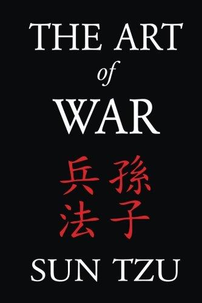
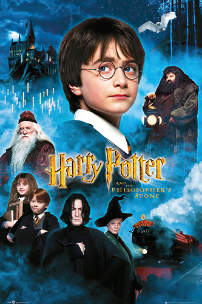

My favorite book & movie
The Art of War, by Sun Tzu (book), 5th century before Christ
I think that I have only read few books in my life but this one is particularely interesting. The Art of War, by Sun Tzu is a book wrote by a Chinese Military General, five centuries before Christ. In this book, Sun Tzu is laying down principles of the art of war. He is explaining and giving advices in short sentences on how to beat surely your enemies. This book is interesting because it is not hard to read and the principles are really interesting. They are really interesting because they can be interpreted in differents ways. The book can be philosophical and the art of war becomes the art of goals, and many of the advices in the book that are teaching you how to win a war can be applied in your own life.
Harry Potter and the Philosopher's Stone (movie), 2001
Harry Potter and the Philosopher’s Stone is my favorite movie of all time. I have watched a hundred of movies in my hole life but this movie has a special place in my heart. Harry Potter is brightly writen : it gives to the people who watch this movie an amazing experience beyond what you could dream as a child. This movie is transporting you into a magical world, composed of lovely and amazing characters. The world where the story is happening is amazing and I always wanted to live in Hogwarts, where the story is happening. A life of magic, of dreams, where everything can happen.